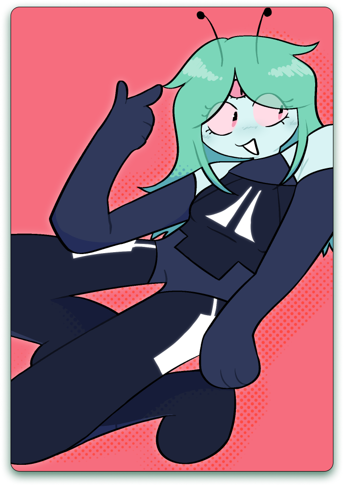
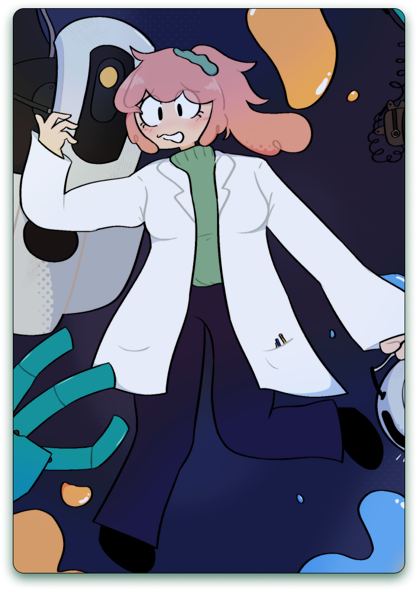
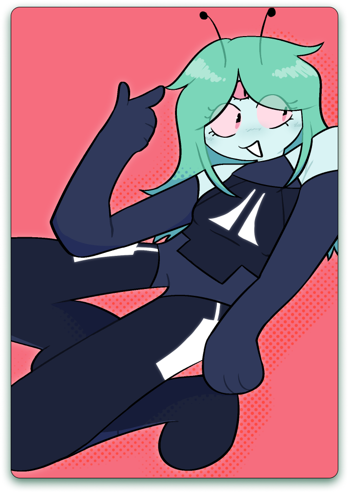
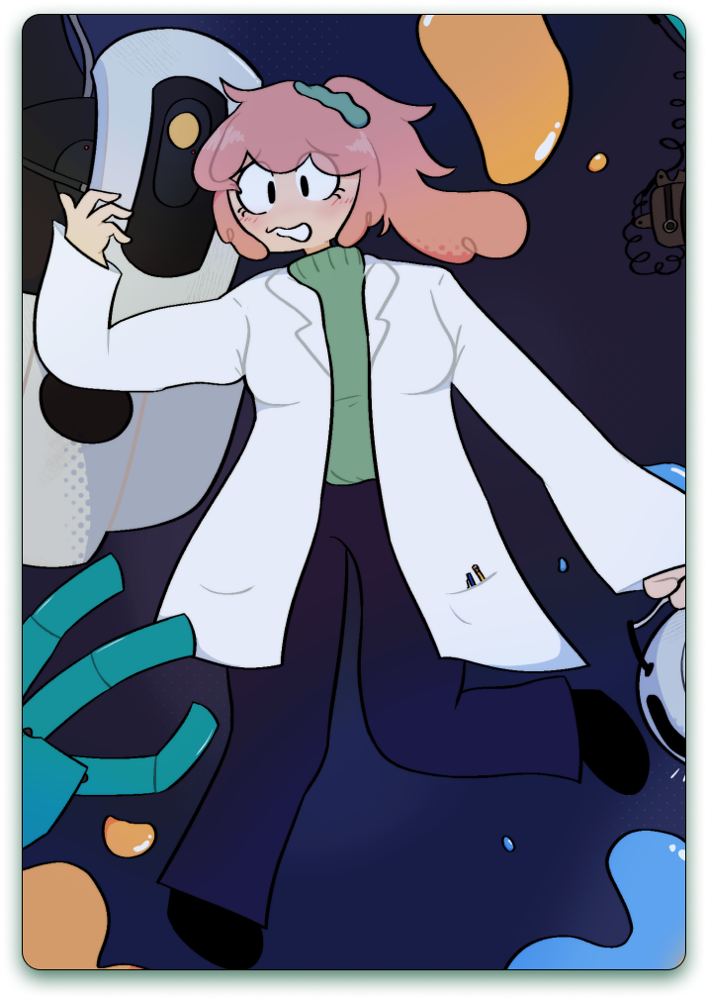

ILLUSTRATIONS
I enjoy creating both traditional and digital illustrations, and incorporating my drawing into my designs. I take inspiration from a variety of media I’ve enjoyed throughout my life, especially Adult Swim animated shows, Craig McCracken, bold colorful comic styles, and even graffiti and street art.
 


